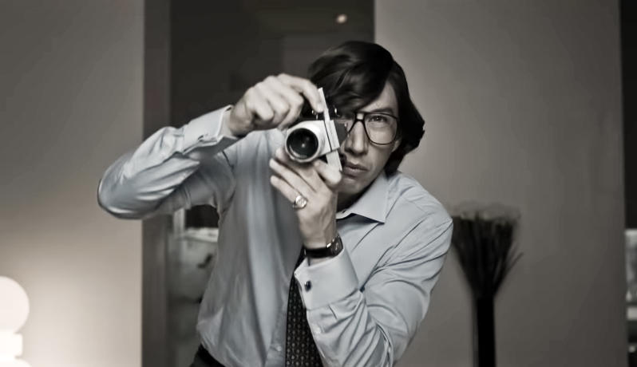
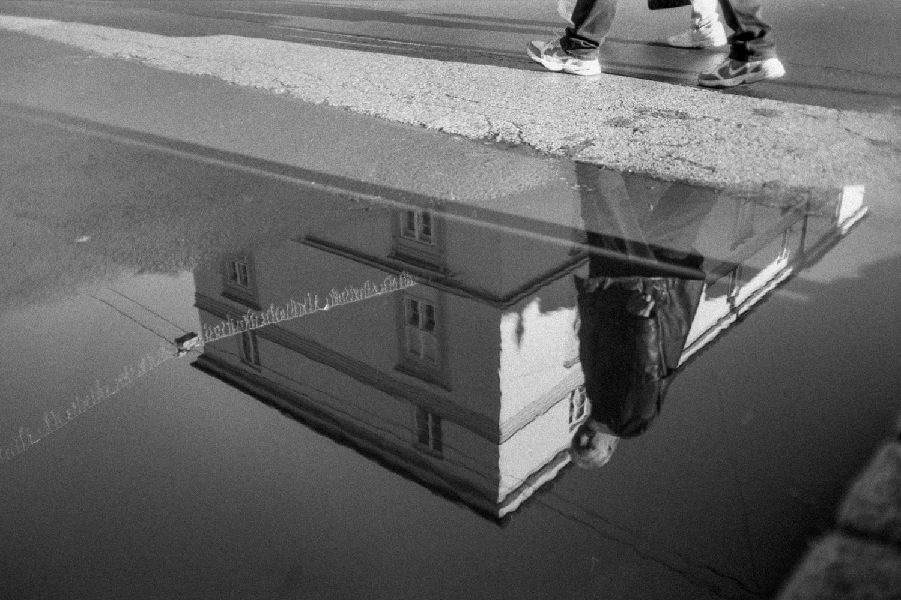
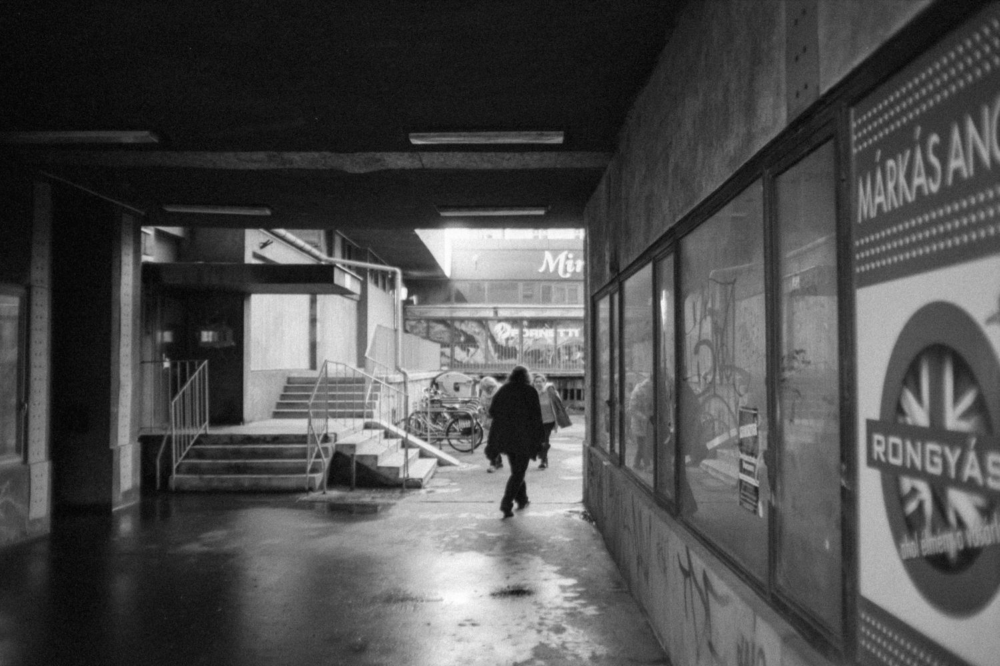
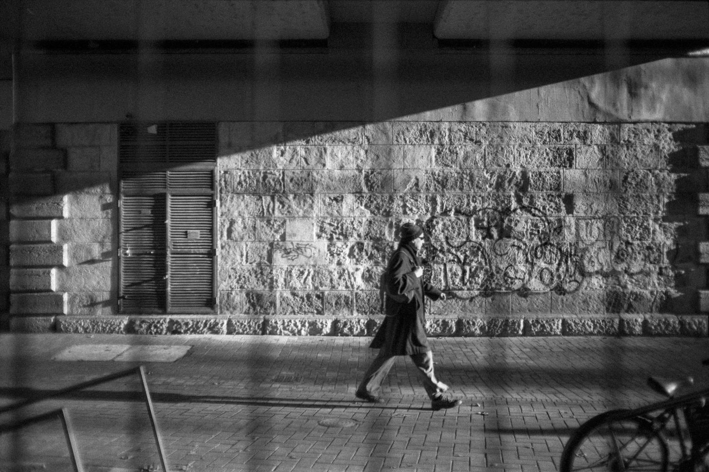
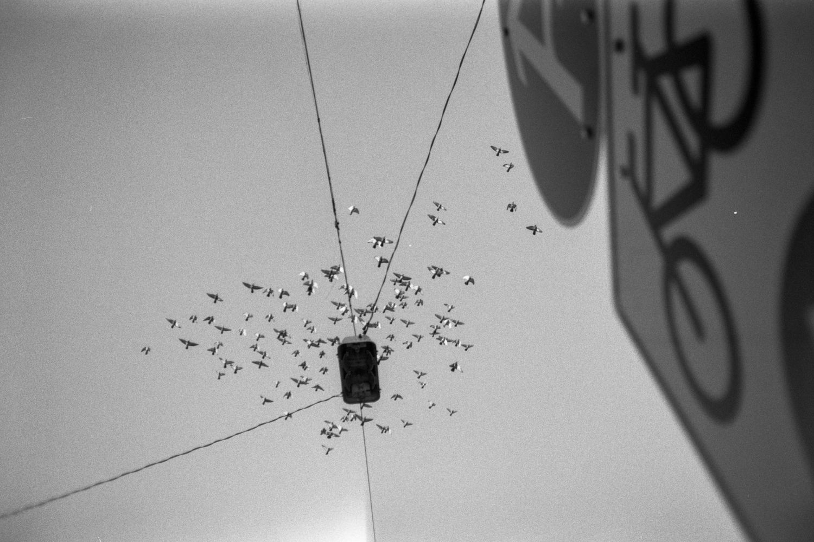
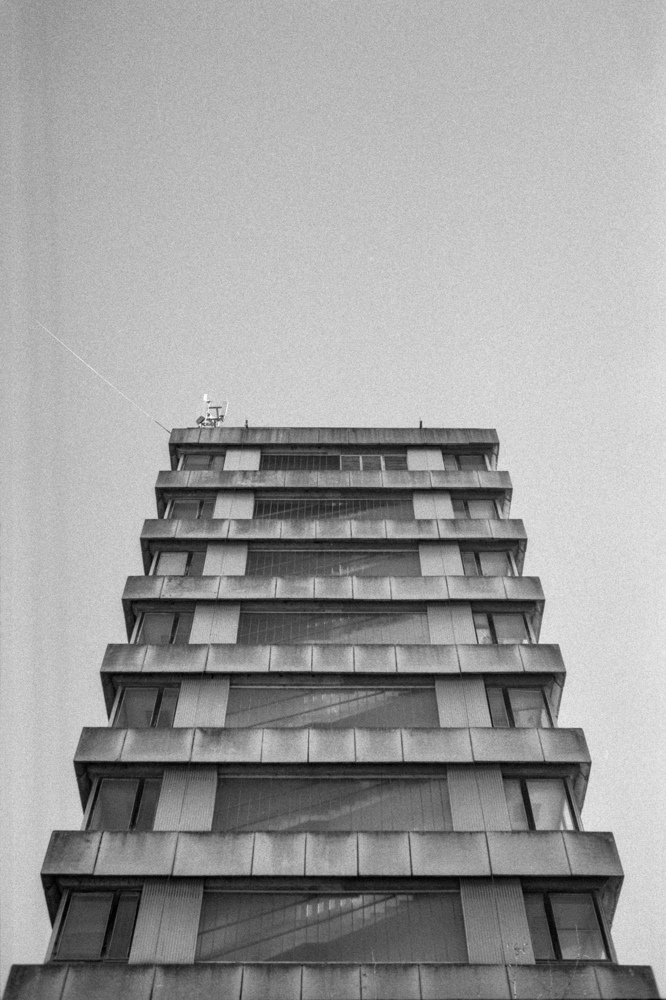
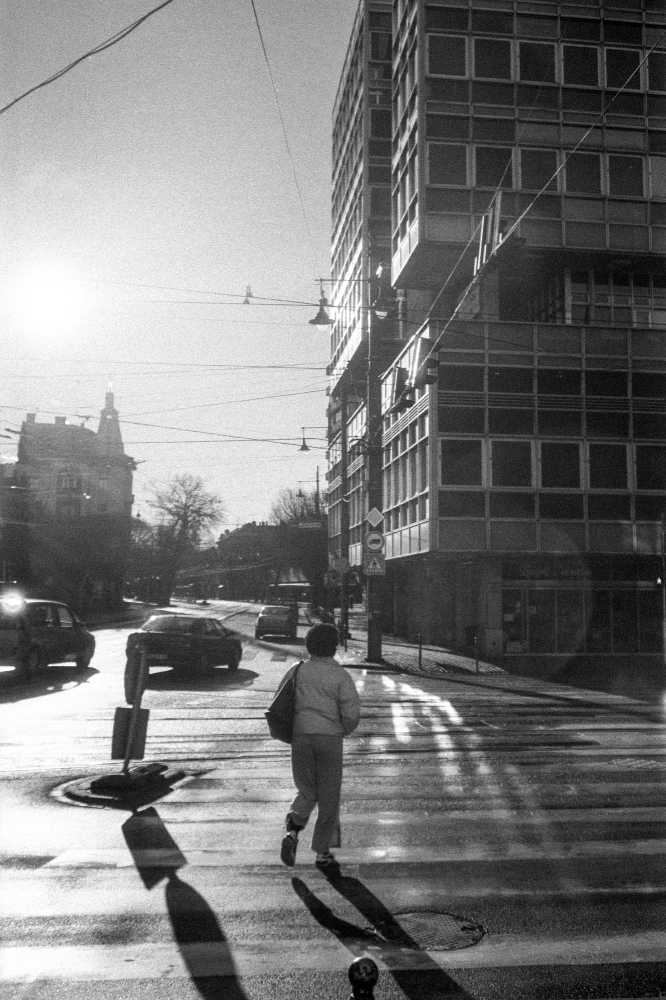

Öcsém még szeptemberben meglepett egy különös ajándékkal: egy 250-es érzékenységű, finomszemcsés, pánkromatikus, fekete-fehér, 35 mm-es mozi-nyersanyaggal. A fajta, amit már nem nagyon látni a boltokban és amit illik megbecsülni, nem csak elhasználni. Az elmúlt években eladtam a legtöbb analóg gépemet és valahogy a film is kikopott a kezeim közül. A digitális kényelme alatt elnémult az a fajta várakozás, amit régen minden kocka jelentett. Maradt ugyan néhány kis kompakt a fiók mélyén, de ezt a filmet valami méltóval szerettem volna megetetni.
Karácsony után, amikor már leülepedett a bejgli és a zaj, egy este Vanival beültünk a House of Gucci című popcorn filmre. Egy jelenetben Maurizio Gucci – Adam Driver hűvös eleganciájával – egy Prakticával fényképezi Patriziát, Lady Gagát. A mozdulat, a gép fémes csillanása, a kattintás ritmusa – ismerős volt. Talán egy MTL3 vagy MTL5 lehetett. Az a fajta vas, ami egyszerre nyers és pontos. A hármas sokáig nekem is kedvencem volt, amíg egy nap el nem adtam, mert „úgysem használom már.” Ott, a moziban, egyetlen snitt elég volt, hogy újra megjöjjön a kedvem hozzá.

Szegeden egyetlen üzlet maradt, ahol még foglalkoznak analóg gépekkel. A kirakat mögött, a vitrinek mélyén, ott pihent egy MTL3, mellé egy Vivitar 35 mm-es obi – tökéletes páros, mint két régi ismerős, akik azonnal értik egymás szándékát. A szett készen állt, csak arra várt, hogy végre betöltsem azt a különös, mozi eredetű filmet.
Nem mindenkinek való ez az anyag. Lágyabb kontrasztok, kissé szemcsés, enyhén ködös világ – de pont ez benne a szépség. Nem a tökéletességet keresi, hanem a történetet a tónusok mögött. Aki ezt érti, az tudja, miről beszélek. A többiek nyugodtan bezárhatják most az oldalt.
Aki viszont marad, annak csak annyit mondok: Enjoy!






A 36 kockás filmet az Analóg Caféban tudjátok megvásárolni 4.990 Ft-ért és az ár tartalmazza az ECN2 hívást.